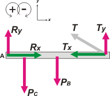

|
NO ME SALEN
PROBLEMAS RESUELTOS DE FÍSICA DEL CBC
|
|

|
2.12- Una barra horizontal homogénea de peso
PB y de longitud 1m está sujeta, mediante una
articulación en el punto A, a una pared vertical y
soportada en B por un alambre de masa despreciable,
que forma un ángulo de 30° con la barra.
Sobre la barra está apoyado un cuerpo de peso
Pc, a 0,2 m de la pared. El sistema está en equilibrio,
siendo la tensión del alambre de 40 N y la
vertical en la articulación de 50 N (hacia arriba).
a- Calcular el peso del cuerpo y el de la barra.
b- ¿Cuál es la fuerza horizontal en la articulación?
Una cuestión absolutamente estándar, no hay que tenerle miedo. Vamos al DCL. |
Las fuerzas verticales las pinté de rojo y las horizontales de verde. ¿Te gusta?
Tené en cuenta que
Tx = T cos 30º = 34,64 N
Ty = T sen 30º = 20 N
Planteamos el equilibrio con Newton (la barra no se desplaza) y Momentos (tampoco gira). |
 |
|
|
|
| Eje x |
Σ Fx = 0 |
Rx — Tx = 0 |
[1] |
| Eje y |
Σ Fy = 0 |
Ry + Ty — PB — Pc = 0 |
[2] |
| Centro en A |
Σ MA = 0 |
— Pc . 0,2 m — PB 0,5 m + Ty 1 m = 0 |
[3] |
|
|
Si contás la cantidad de incógnitas te vas a dar cuenta que se acabó la física... el resto el álgebra. Acá vamos.
de la [1] despejo Rx, calculo y ya me anoto un poroto. |
|
|
|
de la [3] despejo Pc
Pc = 5 Ty — 2,5 PB
eso lo meto en la [2] y despejo PB
Ry + Ty — PB — 5 Ty + 2,5 PB = 0
Ry + Ty — PB — 5 Ty + 2,5 PB = 0
Ry — 4 Ty + 1,5 PB = 0
PB = ( 4 Ty — R y ) / 1,5
|
|
|
|
| Con este valor vuelvo a [2] y despejo Pc |
|
|
|
|
| |
|
 |
| DESAFIO: Si quisieras que tu estante soporte mucho peso...¿Sujetarías el alambre lo más arriba o lo más abajo posible en la pared? |
|
Algunos derechos reservados.
Se permite su reproducción citando la fuente. Última actualización nov-06
|
|
|